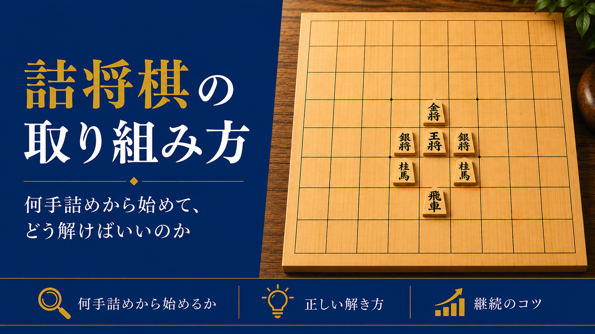

詰将棋の取り組み方 - 何手詰めから始めて、どう解けばいいのか

前回の記事では、級位者と初段の違いは「読みの深さ」「手筋の引き出し」「大局観」の3つにあるとお伝えしました。今回は、その中の一つである詰将棋の取り組み方についてお伝えします。
とはいえ、「詰将棋はやった方がいいと聞くけれど、何から始めればいいのか分からない」という方も多いと思います。この記事では、詰将棋の正しい取り組み方を、具体的な手順に分けてご紹介します。
何手詰めから始めるべきか
結論から言うと、まずは1手詰め・3手詰めから始めるのがおすすめです。
いきなり5手詰め・7手詰めに挑戦しない方がいい理由
手数が長い詰将棋は、それだけ読む変化の数も多くなります。まだ1手詰め・3手詰めがスラスラ解けない段階で長手数に挑戦すると、答えを覚えるだけの作業になってしまい、本来鍛えたい「読む力」が身につきません。
1手詰め・3手詰めが安定して解けるようになったら
1手詰め・3手詰めを見た瞬間に、頭の中で流れが浮かぶようになったら、5手詰めに進みましょう。焦らず段階を踏むことが、遠回りに見えて実は一番の近道です。
正しい解き方
盤に並べず、頭の中だけで読み切る
詰将棋の一番の目的は、実戦で盤面を見ながら「この後どうなるか」を頭の中で読み切る力を養うことです。駒を動かしながら試行錯誤して解いてしまうと、この力が育ちません。最初は時間がかかっても構わないので、頭の中だけで最後まで読み切る習慣をつけましょう。
王手の中から絞り込む
詰将棋は必ず王手の連続で詰みます。まずは「王手になる手」をすべて洗い出し、そこから相手の応手を読んでいくと、闇雲に手を探すよりも早く正解にたどり着けます。
解けなかったら、すぐに解答を見る
5分程度考えて分からなければ、粘りすぎずに解答を確認しましょう。詰将棋は考える時間の長さよりも、たくさんの問題に触れて手筋のパターンを増やすことの方が重要です。
継続するためのコツ
毎日同じ時間に、少しずつ
1日に何十問も解くより、毎日3〜5問を継続する方が力がつきます。朝起きてすぐ、寝る前など、生活の中に組み込んでしまうと続けやすくなります。
解けなかった問題を、時々解き直す
詰将棋は、新しい問題にたくさん触れることが基本です。ただ、一度解けなかった問題は、そのままにせず、時々(1週間後・1ヶ月後など)解き直してみましょう。パッと手が浮かべば、その手筋が身についた証拠です。まだ迷うようであれば、もう少し復習が必要というサインになります。
まとめ
詰将棋は、正しい手順で取り組めば、初段への近道になります。1手詰め・3手詰めから始め、頭の中だけで読み切ることを意識し、毎日少しずつ継続する。この3つを守るだけで、終盤力は着実に育っていきます。
初段を目指す方向けの指導も行っています。気になる方は、まずは無料体験からお試しください。
無料体験を申し込む